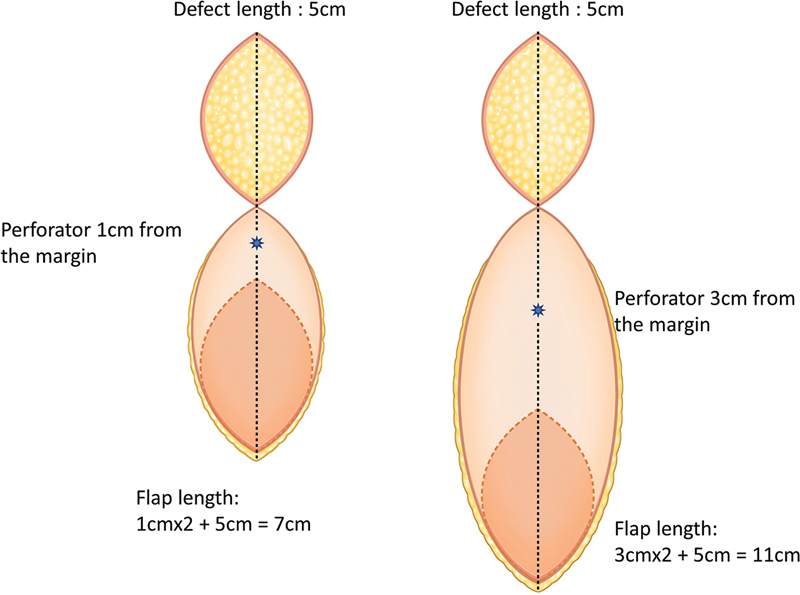
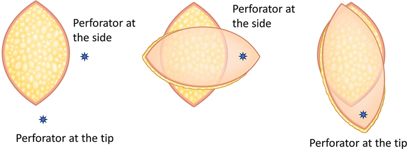

あらかじめ決められた名前の皮弁（例：前外側大腿皮弁）や、決められた血管を追いかけるのではなく、術前に超音波ドプラ（血流の音を拾う装置）で見つけた任意の穿通枝（せんつうし＝深部の血管から皮膚へ立ち上がる細い枝）を血流の茎（けい＝皮弁を養う血管の幹）にして、必要な組織を必要な場所から自由に挙げる ―― この「フリースタイル（free-style＝型にとらわれない）」という考え方を示した論文です。著者らは2002〜2003年に太もも（大腿）からこの方法で13枚の皮弁を挙げ、口腔・咽頭（いんとう）がんの再建に用いて全例を成功させたと報告しています。穿通枝皮弁（せんつうしひべん＝筋肉を取らず、皮膚へ立ち上がる穿通枝1本を追いかけて挙げる皮弁。Koshima & Soeda 1989）の考え方を一般化した到達点とされ、『どの筋肉を採るか』でも『どの決まった皮弁を使うか』でもなく、『どの穿通枝を選ぶか』へと皮弁設計の発想を推し進めた報告と位置づけられます。
背景 ― 「決まった皮弁・決まった血管」という縛り
この論文が書かれた2004年ごろには、遊離組織移植（ゆうりそしきいしょく＝血管ごと組織を切り離し、顕微鏡下で移植先の血管に縫い直す方法）は、複雑な欠損（けっそん＝がん切除やけがで組織が失われた部分）を再建する標準的な方法として確立していました。抄録でも、遊離組織移植は複雑な欠損の再建で受け入れられた標準になった、と述べられています。
この分野が発展するなかで、解剖学的研究と臨床の積み重ねにより、マイクロサージャリー（顕微鏡下の血管吻合手術）を行う術者が使える皮弁（ひべん＝血流を持った皮膚・組織の塊）は数多く増えていきました。前外側大腿皮弁（ALT皮弁）、深下腹壁動脈穿通枝皮弁（DIEP皮弁）など、皮弁にはそれぞれ「名前」と、その名前に結びついた「決まった血管」「決まった採取部（さいしゅぶ＝組織を採る場所）」がありました。
しかし穿通枝の位置には個人差があり、教科書どおりの場所に決まった太さの血管があるとはかぎりません。「この皮弁を使うと決めたのに、いざ開けてみると狙った血管が細かった／位置がずれていた」という解剖学的なばらつきに、術者はしばしば振り回されてきました。『決まった皮弁を採取部に当てはめる』のではなく、『その場で見つかった穿通枝から皮弁を組み立てられないか』という発想が、この論文の出発点にあたります。
この論文がしたこと
著者らは、穿通枝皮弁手術の技術と経験がさらに進んだことで、皮弁を「フリースタイル（型にとらわれない）」なやり方で挙げられるようになった、と述べています。抄録の定義によれば、フリースタイル皮弁とは「特定の領域に存在するドプラ信号の術前の情報だけにもとづいて挙げる皮弁（a flap is harvested based only on the preoperative knowledge of Doppler signals present in a specific region）」です。つまり、決まった血管名を追うのではなく、ドプラで拾った穿通枝の信号そのものを頼りに皮弁を設計します。
著者らは2002年6月から2003年9月までのあいだに、太もも（大腿）の領域からこの方法で13枚のフリースタイル遊離皮弁を挙げたと報告しています。患者は全員が口腔（こうくう＝口の中）または咽頭（いんとう＝のど）のがんで、腫瘍の切除と同時に、これらの皮弁による即時再建（切除したその場で欠損をふさぐこと）を受けました。
挙げられた皮弁はすべて皮膚のみの皮弁（cutaneous flap＝筋肉を含まない、皮膚と皮下組織の皮弁）で、いずれも筋膜上（きんまくじょう＝suprafascial、筋肉を包む膜のさらに浅い層）で挙上された、と記載されています。筋膜より浅い層で挙げることは、皮弁を薄く仕上げやすいことにつながります。
解剖と手技の要点
フリースタイル皮弁の要点は、「先に皮弁の名前を決める」のではなく「先に穿通枝を見つける」という順番の逆転にあります。まず術前に超音波ドプラを当て、必要な組織が採れそうな領域で、皮膚へ立ち上がってくる穿通枝の信号を探します。信号が確認できたら、その穿通枝を中心にして皮弁の形と大きさをその場で設計し、穿通枝を筋肉や筋膜から丁寧に剥がして根元の血管まで追い、血管ごと切り離して移植先へ運びます。
この論文で挙げられた皮弁の平均の大きさは108平方センチメートル（範囲は36〜187平方センチメートル）で、血管柄（けっかんへい＝血流の通り道である血管の茎）の平均の長さは10センチメートル（範囲は9〜12センチメートル）だったと報告されています。遊離皮弁では、血管柄が長いほど移植先の血管まで届きやすく、縫いやすくなるため、これは実用上の利点になります。
以下の図は、原著の抄録には具体的な図示がないため、同じ「フリースタイル」の考え方を扱った別のオープンアクセス論文から引用した概念図です。決まった血管に皮弁を合わせるのではなく、見つけた穿通枝の位置に合わせて皮弁を自由に設計する、という考え方を示しています。


結果
抄録に記された成績は次のとおりです。2002年6月〜2003年9月に太ももの領域から13枚のフリースタイル遊離皮弁を挙げ、口腔・咽頭がんの切除と即時再建に用いました。皮弁の平均の大きさは108平方センチメートル（36〜187）、血管柄の平均の長さは10センチメートル（9〜12）でした。
そして著者らは、すべての皮弁が創（きず）の被覆と機能的な結果を達成し、再手術（re-exploration＝血流トラブルで血管を縫い直すためにもう一度手術室へ戻すこと）を必要とするような血管のトラブルは1例も起こらなかった、と報告しています。これを受けて抄録は「フリースタイル遊離皮弁は臨床の現実になった（Free-style free flaps have become a clinical reality）」と述べています。
抄録に示されている症例数・成績はここまでで、生着率のパーセント表示などそれ以上の細かな数値は記載されていません。したがって本ページでも、抄録にない数値は記載しません。
意義 ― 穿通枝皮弁の考え方を一般化した到達点
この論文の意義は、皮弁を「どの筋肉を採るか」でも「どの決まった皮弁を使うか」でもなく、「どの穿通枝を選ぶか」で語れることを、遊離皮弁の世界で明確に示した点にあります。穿通枝皮弁の概念（Koshima & Soeda 1989）が「筋肉を残して穿通枝1本で皮膚を挙げる」ことを示したのに対し、この論文はその考え方をさらに推し進め、『特定の皮弁の名前にも、決まった血管にも縛られず、見つけた穿通枝から皮弁を組み立てる』という一般化した到達点を示したと位置づけられます。
抄録は、フリースタイル皮弁を挙げるために用いる概念と技術は、従来の（名前の決まった）皮弁を採取するときに出会う解剖学的なばらつきに対処するうえでも役立つ、と述べています。つまりフリースタイルは特殊な一手法にとどまらず、あらゆる穿通枝ベースの皮弁採取に通じる「構え」でもある、という主張です。
さらに著者らは、今後の皮弁選択の流れは、移植先が求めるテクスチャ（質感）・厚み・しなやかさに合う組織を選び、同時に採取部の障害（donor-site morbidity＝組織を採ったことによる提供部の後遺症）を最小限にする方向へ向かう、と展望しています。「どの皮弁が有名か」ではなく「移植先に何が必要か」から逆算して組織を選ぶ、という発想の転換です。
この報告は、太ももを皮弁のドナーへと読み替えた大腿皮弁（Song 1984）や、筋肉を残す穿通枝皮弁（Koshima & Soeda 1989）から続く流れの延長線上にあり、穿通枝皮弁という考え方が行き着いた一つの到達点として引用されています。
この論文の要点
- 決まった皮弁の名前や決まった血管に縛られず、術前に超音波ドプラで拾った特定領域の穿通枝信号だけを頼りに皮弁を設計・挙上する「フリースタイル」という考え方を示した。
- 2002年6月〜2003年9月に太もも（大腿）の領域から13枚のフリースタイル遊離皮弁を挙げ、全例が口腔・咽頭がんの切除と即時再建に用いられた。
- 皮弁はすべて皮膚のみ（cutaneous）で筋膜上（suprafascial）に挙上され、平均の大きさは108cm²（範囲36〜187cm²）、血管柄の平均の長さは10cm（範囲9〜12cm）だった。
- すべての皮弁が創の被覆と機能的な結果を達成し、血流トラブルで再手術を要した例は1例もなかった（抄録に記載された成績はここまで）。
- フリースタイルの概念・技術は、従来の名前の決まった皮弁を採取する際に出会う解剖学的なばらつきへの対処にも役立つとされる。
- 穿通枝皮弁の概念（Koshima & Soeda 1989）を一般化した到達点とされ、皮弁設計を『どの穿通枝を選ぶか』『移植先に何が必要か』へと転換させた。
用語ミニ辞典
- フリースタイル遊離皮弁（free-style free flap）
- 決まった名前の皮弁や決まった血管に縛られず、術前にドプラで見つけた任意の穿通枝を茎にして、必要な組織を必要な場所から自由に挙げる遊離皮弁。本論文が提示した考え方。
- 穿通枝（せんつうし）
- 深部の動脈から、筋肉や筋膜を貫いて（穿通して）皮膚へ立ち上がってくる細い枝。フリースタイルでは、この枝の信号をドプラで拾い、それを中心に皮弁を設計する。
- 穿通枝皮弁（perforator flap）
- 筋肉を体に残したまま、穿通枝だけを血流の茎として皮膚と脂肪を挙げる皮弁（Koshima & Soeda 1989）。フリースタイルは、この考え方を特定の皮弁名から解き放って一般化したものとされる。
- 超音波ドプラ
- 血流が出す音を拾って血管の位置を知る装置。フリースタイルでは、術前にこのドプラで穿通枝の信号を探し、皮弁を設計する出発点にする。
- 遊離皮弁 / 遊離組織移植
- 血管ごと組織を切り離し、顕微鏡下で移植先の血管に縫い直して移す皮弁・手術。複雑な欠損の再建の標準的な方法とされる。
- 筋膜上（suprafascial）挙上
- 筋肉を包む膜（筋膜）よりも浅い層で皮弁を挙げること。皮弁を薄く仕上げやすい。本論文の皮弁はすべてこの層で挙げられた。
- 血管柄（pedicle）
- 皮弁を養う血管の茎。ここを通じて血液が出入りする。遊離皮弁では、長いほど移植先の血管まで届きやすく縫いやすい。本論文では平均10cm（9〜12cm）だった。
- 採取部の障害（donor-site morbidity）
- 皮弁の組織を採った側（提供部）に残る後遺症や機能低下。フリースタイルは、移植先に必要な組織を選びつつ、この採取部の障害を最小限にする方向を目指すとされる。
本ページは形成外科の学習・参照を目的とした編集部によるオリジナルの日本語解説で、原著（英語）の逐語訳・全文転載ではありません。正確な内容・数値・図は必ず上記リンク先の原著をご確認ください。
掲載している図は、原著の図ではありません。原著の図は出版社が著作権を持ち転載できないため、同じ術式・同じ解剖を扱った無料公開（オープンアクセス／CC BY）論文の図を、出典とライセンスを明記して引用しています。